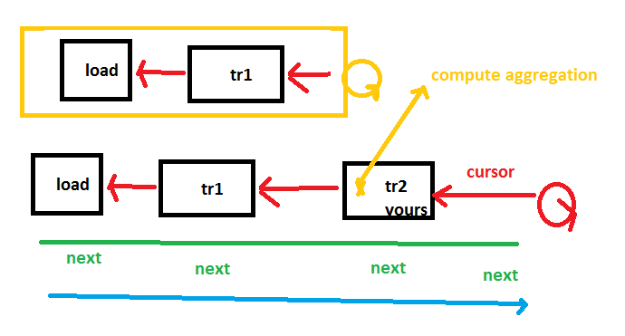

Scikit.ML details¶
Elements of code¶
The following concepts are described in details in section ML.net details.
Definitions¶
- active column: a transform can replace a column by another or just skip one, in that case, the older column may remain but will be hidden as opposed to active.
- row: data unit for every data set, every row is usually independent from the others but not necessarily, not independant if there is a group column.
- cursor: row iterator on a dataset
- getter: each cursor does not give a pointer on a row (the type of row is unknown from ML.net ‘s point of view), but a cursor defines a way to access a specific column through a getter. A getter is a function which retrieve the value for a column for the current row.
- schema: a list of typed columns
Subleties¶
Trainable transform¶
The training usually happens when an object is instantiated in ML.net and the next step in the pipeline requires this transform to be instantiated. The transforms in this extension postpones the training step until some cursors are created: GetRowCursor. Pipeline instanciation happens following the blue arrow (forward). Computing the prediction requires to get cursor from every step and it follows the red path (backward). You can either train a transform on the blue path (called from the constructor) or on the red path (called by the cursor instanciation). As the scoring process may create several cursors working in parallel, the training must be protected against multithreading.
DataFrame Getters¶
DataFrames expects to have sortable elements which is not the case
of objects representing strings ReadOnlyMemory<char> or
sparse arrays VBuffer<TYPE>. Scikit.ML implements a sortable
version for both of them.
VBuffer<TYPE>is replaced byVBufferEqSort<TYPE>,ReadOnlyMemory<char>is replaced byDvText.
The biggest change comes when a user tries to get a getter available
through interface IDataView. The signature is ValueMapper<TYPE> GetGetter<TYPE>(int col).
DataFrame implements to let the user choose which ever type
he would like to get. So the following calls do not return a null pointer,
GetGetter<VBuffer<TYPE>>(0),
GetGetter<VBufferEqSort<TYPE>>(0),
GetGetter<ReadOnlyMemory<char>>(0),
GetGetter<DvText>(0)
even though DataFrame always use VBufferEqSort<TYPE> and DvText.
Method GetGetter<TYPE>(int col) implements the implicit conversion
requested by the user.